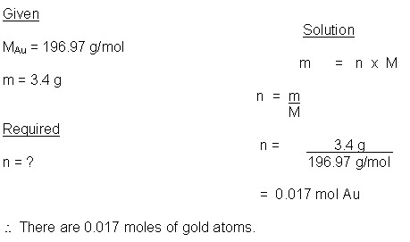
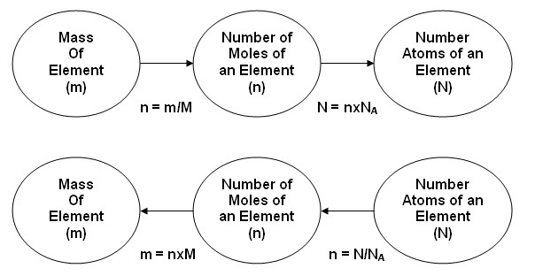
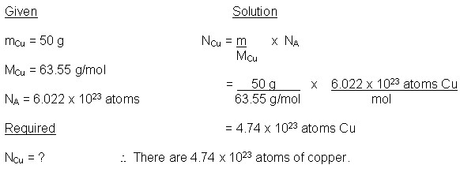
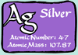

Unit 3: Quantities in Chemical Reactions
Activity 2: The Mole
Content
 Check Your Understanding
Check Your Understanding
 Answer
AnswerAs stated, 1 mole of the carbon-12 isotope contains 6.022 x 1023 atoms. Also, 1 mole of the carbon-12 isotope has a mass (m) of 12.00 grams. The relationship between the mass per mole of an element is known as the molar mass (M) and it is equal to its relative atomic mass. The relative atomic mass of carbon-12 is 12.00 u. The molar mass of carbon-12 is 12.00 g/mol.
When chemists are measuring the mass of an element, such as copper, for a particular purpose and the number of moles are important, the formula showing the mathematical relationship between the mass (m) of an element, its molar mass (M) and the number of moles (n) of the element is m = n x M
 Example 3
Example 3
The mass of gold in a particular 18 karat gold wedding ring is 3.4 grams. Calculate the number moles of gold in the ring.
 Sample Solution
Sample Solution

Take an extra step and calculate the number of atoms of gold in this wedding ring. Try the next question.
Check Your Understanding
- How many atoms of gold can be found in 0.017 moles of gold?
The calculations involved in connecting the mass of an element, the number of moles of an element, and the number of atoms, can be shown in following summarized flow charts:

Journal
|
|
Be sure to make note of Avogadro’s number, the mole, molar mass and the formulas used calculate the respective unknowns. Your teacher may ask you to submit your journal at a later date. |
|---|
Example 4
How many atoms of copper can you find in a 50 g piece of wire?
Sample Solution

The previous question used a formula combining mass, molar mass and Avogadro’s number to find the number of atoms. If you were given the number of atoms, molar mass and Avogadro’s number and were asked to find the mass of the element then the formula would look like this:
m = N x M
NA
Check Your Understanding
6.  |
Calculate the mass of silver on a silver plated object containing 2.23 x 1022 atoms of silver. |
This is a disclaimer. External Resources will open in a new window. Not responsible for external content.
Unless otherwise indicated, all images in this Activity are from the public domain or are © clipart.com or Microsoft clipart and are used with permission.